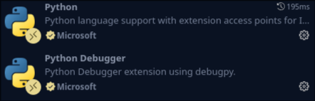
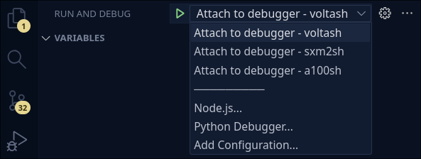

Remote debugging
As most Machine Learning / Deep Learning on the cluster is done using Python, a working debugging environment is incredibly valuable.
Files will inevitably become linked over time as code complexity increases, making it increasingly cumbersome to keep track of logic flows after execution. As debugging is not so straight forward when using the HPC, this section is dedicated to create a working debugging setup in a breeze for scripts running on interactive nodes.
Setting up the debugging environment¶
In order to get a working debugging setup you'll first need to install the Python Debugger extension by Microsoft in VSCode while connected to the HPC through Remote - SSH:

You'll also need the Python extension if you've not got this already.
Now in the left column menu in your editor, click on the Run & Debug section (the play button with an insect).
This will either show an empty menu or you'll be prompted by some text and options, such as "create a launch.json file", and a large button with text "Run and Debug".
If you see the latter case, then you don't have an existing launch.json file in your project root, which is necessary to start debugging. In this case:
- Click "create a launch.json file"
- In the dropdown, select "Python Debugger"
- Select "Remote Attach"
- Lastly, you'll need to specify a valid IP address and afterwards a valid port, for which the default options are fine for now; click enter twice.
You'll now have a launch.json file in a hidden .vscode directory at your project root, which will look something like this:
{
go.microsoft.com/fwlink/?linkid=814321
"version": "0.2.0",
"configurations": [
{
"name": "Python Debugger: Remote Attach",
"type": "debugpy",
"request": "attach",
"connect": {
"host": "localhost",
"port": 5678
},
"pathMappings": [
{
"localRoot": "${workspaceFolder}",
"remoteRoot": "."
}
]
}
]
}
If you can't find the file in the VSCode file editor
The VSCode file editor only shows a current snapshot of your project directory. Sometimes, new files/folders which you e.g. create with the terminal will only be visible if you press the "Refresh explorer" button in the top of the file explorer.
The important thing to note here is everything within the "configurations" section of launch.json; here, all of your debugging setups have to be stored.
In your Run and Debug section on VS Code, there is now a dopdown menu at the top, which will hold each of your debug configurations which you can choose from as soon as we've created them.

Having created a launch.json file, we now only need to create a communication channel between your current interactive node and your terminal. We've created a script to do this for you, which appends a debugging configuration for your current interactive node session. Run the script add_debug_machine.sh to do so, by issuing these commands from the project root directory:
chmod 700 scripts/add_debug_machine.sh
./scripts/add_debug_machine.sh
and add the name of the interactive node you're on.
Note: you'll need to do this each time you're on a new interactive node which you haven't made a configuration for yet.
Important: never share .vscode/launch.json online, as this exposes the open ports and ip adress of the interactive nodes.
If you're in doubt, check that your .gitignore file in your project-root contains the line .vscode/* and that git status never includes the .vscode/ folder contents, even after running git add ..
What the script actually does
The script extracts a specific ethernet IP address and inserts it into the configurations section of launch.json. When starting a debugging session with the given configuration, the debugger waits and listens on a specific port of this ip-address to allow tunelling debugging.
Debugging a script¶
Now that our debugging environment is ready, we now want to use a test script to see if the debugger works as expected. Make a new python file and add some logic, such as:
print("hello")
x=12
while x < 1500:
x+=2
x+=1
print(x)
x=6
Now we want to add a breakpoint, done by clicking to the left of the line indices in the python script. If you're unfamiliar with debugging, this means that when the debugger arrives at this point, it will come to an immediate stop, allowing you to inspect values of variables dynamically during execution. For the above code, try to set a breakpoint at line 5 - when debugging, the value of x should be 14.
Now to start debugging, you need to run the run_file.sh script from the GitHub repository, using the command:
./scripts/run_file.sh path/to/test_file.py --debug
Upon executing the run_file.sh script, it will now wait until you attach your debugger onto your session. Just to the left of the dropdown debug configurations menu, there's a run button. Click this to attach your debugger (note: you need to wait for a couple of seconds, otherwise VS Code will complain). If everything works as expected, then execution starts and you should stop at your breakpoint, be able to print variables in an interactive terminal, etc.!
One issue you may find is, that the debugger doesn't stop at your breakpoint. If this is the case, the likely reason is that your editor (VSCode) is not stationed at your project root, which is necessary for your debugger to work. Change directory and remember to move your .vscode directory to your project root.
The run-file.sh helper script for running/debugging scripts¶
Elaborating on the run_file.sh file, its intended purpose is to streamline cluster interaction, such that all you need to do in order to run/debug (mostly) successfully:
- ssh into the server at the project root
- Connect to the given interactive node of your choice
- Run run_file.sh script on a desired python file
The script will itself choose the GPU which has most available memory, meaning that you don't need to worry about commands such as nvidia-smi. If you can't run the script, then this subsequently means, that there is no space available on the current node!
Furthermore, the script itself calls setup_env.sh, meaning you don't have to think about your python environment. Finally, it handles the debugging configuration for you, as per the previous section.
There are two variables you may need to change, depending on your application. These can be found in the "personalized variables" file section:
# ---- Personalized variables ---- #
FILEPATH="src/main.py"
PORT="5678"
# ---- Personalized variables ---- #
Changing the FILEPATH variable will set the default file to be executed by the script, i.e. the script invoked when simply issuing
./scripts/run_file.sh
You therefore don't need to specify this path in the command line, but can always overwrite it by providing a path when invoking the script.
The PORT variable may never be needed, however, if you can't attach to the debugger, this may be the reason. If so, change this port number and match the port numbers found in launch.json with your chosen value.